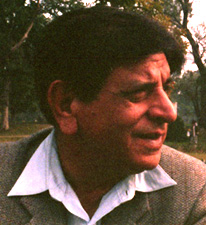
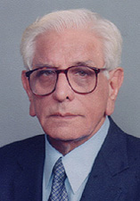

|
IKRAMULLAH (CHAUDHRY) was born in 1930 in Jandiala, a small village in the Nawan Shehr District of Jullundur (India). He finished high school in Amritsar. After Partition his family moved to Multan where he received a B.A. in 1953. Two years later he took a law degree from University Law College at Lahore. After practicing law in Multan for a few years, he went into the insurance business in 1965, retiring in 1990. He has been writing fiction since 1962 and has published several collections of short stories and, more recently, a novel Sa'e ki Avaz. He lives in Lahore, Pakistan.
|
|  |  |
PHOTO BY M.U. MEMON, 1989 |